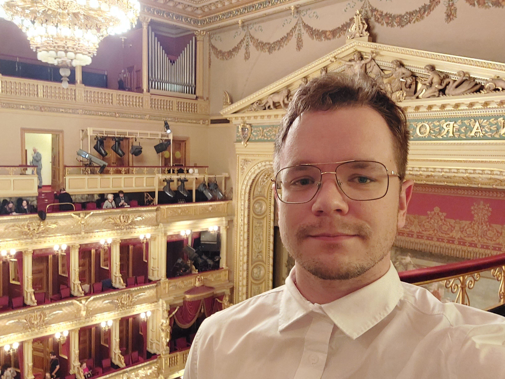
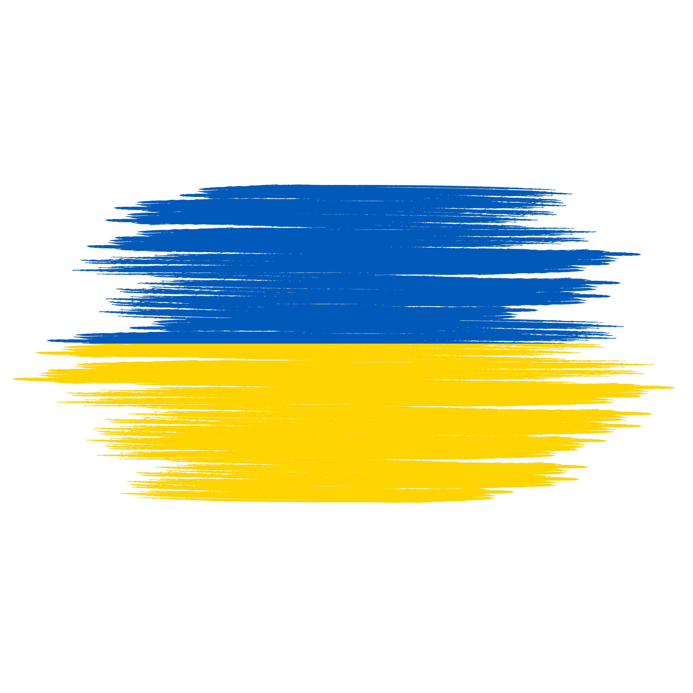

Denys Timoshyn
Cell: +420-776-474-921
Email: denys.timoshyn@cern.ch
Email: cdentimosh@gmail.com
I am a PhD student at Charles University, Prague. I am working on the ATLAS experiment at CERN. I am currently working on the measurement of four-top quarks production in all-hadronic decay channel. I am also interested in the search for new physics beyond the Standard Model.
- Education
-
Charles University - Prague, Czech Republic
Doctoral sutdent: Institute of Particle and Nuclear Physics. Thesis work under survision of Peter Berta.
Jet Definitions and Monte-Carlo based calibration sub-group: An active member of ATLAS Combined-Perfomance sub-group. Under supervision of Ana Peixoto and Hannsjorg Weber.Kyiv National University - Kyiv, Ukraine
Master degree with honors: Physics and Astronomy. Department of quantum field theory. Thesis work under survision of Stephane Jezequele at L.A.P.P., Annecy, France.
Bachelor degree with honors: Physics and Astronomy. Department of quantum field theory. Thesis work under survision of Yurii Synyukov, Boholyubov Intstute of Theoretical Physics. - Skills
-
Computer skills
C++/ROOT, python, bash shell, Mathematica. Experience with Docker and CD/CI apllication to projects.
Languages
English (C1), Ukrainian (native), French (B1)
Physics
Expert on Standard Model physics.
- Experience
-
Intership at LAPP A student of a mobility grant - Annecy, France - 2020
- Inspired
ATLAS Tutorial WeekPhD Student - CERN, Geneva, Switzerland - 2022
- Familiarized with default ATLAS-based analyses
- Hobbies
- Learning lanugages, Arduino, travelling
- References
- ATLAS Hadronic Calibration Workshop 2023 session chair for JetDef Developments
- Inspire HEP Page
- Doctoral students at Institute of Particle and Nuclear Physics
- Outreach
- Believe in importance of popularisation of STEM
- Provided input to an article How Ukrainian physicists develop science in CERN (UA article)
- Presented at ICHEP2024 at "Equity, Diversity and Inclusion" session Ukrainian contribution to particle physics: historical perspective and prospects
- Presented at LHCp2025 at "Top-quark" session ttbar+heavy flavor measurements from ATLAS
- Made webinars for Ukrainian pupils and public on topics: Webinars were organized by Oleksandr Yurov, a head of the Club of Honorary Ambassadors of CERN Science in Ukraine and a Senior Specialist of "the Junior Academy of Sciences of Ukraine". Translated to Ukrainian language the book "Particle Physics for Babies" by Louie Dartmoore Corpe.

A hobby project: tracking cars. Uses pre-trained YOLO ML models that can identify 80 different classes. Speed is determined from a simple consideration that car size is proportinal to 4 meters. The purple lines are determined from Kalman Filter and predict the future position of a specific car.